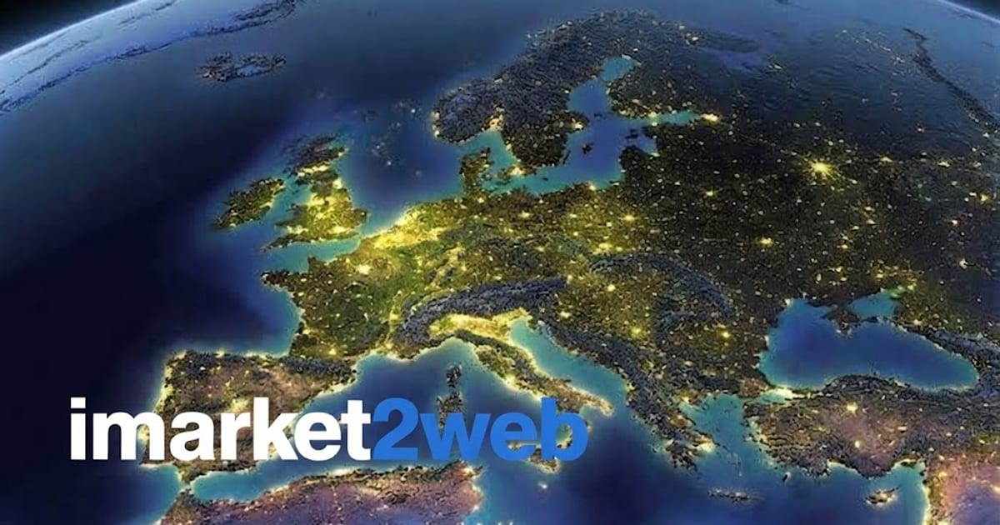

Как вас на самом деле находят.
Заметки о том, как строить видимость в поиске для небольших кабинетов и студий в Познани, Праге и Таллине. Что сработало, что стоило денег и ничему не научило, и почему порядок работы важнее любой отдельной тактики.
Написано по опыту работы, а не по подсказкам сервиса запросов.

С чего начать, если вы открыли бизнес в Польше и хотите, чтобы вас находили польские клиенты: Гугл Бизнес Профиль, сайт на польском, отзывы и реклама - по шагам и в правильном порядке.

Большинство советов по локальному SEO написаны для компаний с отделом маркетинга. Это версия для кабинета, где работает один человек: что двигает позиции на картах, что съедает полдня впустую и в каком порядке все делать, если на маркетинг есть два часа в неделю.
Написаны после работы, а не вместо нее.
Все, что здесь есть, выросло из реального проекта для реального малого бизнеса: студии перманентного макияжа, массажного кабинета, тату-студии, компании, которая делает игровую графику. Если я привожу цифру, значит, я видела, как она менялась. Если я говорю, что что-то - пустая трата денег, то обычно потому, что потратила их сама.
Это и есть все правило выбора тем. Здесь нет графика публикаций и нет попытки охватить тему целиком: текст, написанный ради заполнения календаря, стоит ровно столько, сколько стоило его написать. Новая статья появляется, когда работа научила чему-то, что пригодится другому владельцу бизнеса.
- Локальное SEO: выдача на картах, Гугл Бизнес Профиль, отзывы
- Что делать первым, если бюджета хватает на одну вещь
- Видимость в ChatGPT и других ассистентах, а не только в Google
- Расходы в конкретных цифрах и что они дали
- Ошибки, в том числе мои собственные
Для кого это
Для владельца бизнеса, который сам себе весь отдел маркетинга. Почти все советы по локальному SEO молча предполагают команду, бюджет и человека, для которого это основная работа. Если у вас два часа в неделю и процедуры вы тоже делаете сами, большинство таких советов не столько неверны, сколько невыполнимы, а порядок, который они предлагают, вам не подходит.
Поэтому эти статьи написаны под два часа в неделю. Они говорят, что сделать первым, что может подождать квартал, а что можно пропустить совсем. Если что-то отсюда вам пригодилось бы, но делать это самим не хочется, на странице услуг тот же объем описан как работа, а бесплатный SEO-аудит покажет, какая именно часть нужна вам.
Посмотрите, сколько это стоит в вашем случае.
Пять вопросов, реальный диапазон цен и разбивка по пунктам - прямо на странице, без почты.